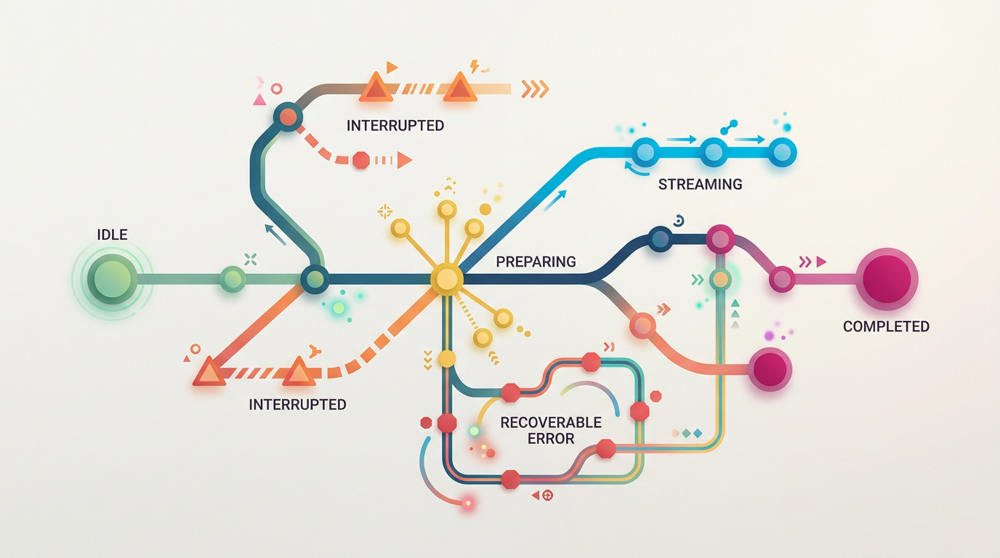

Uma interface com IA costuma ser apresentada como uma conversa: campo de texto, botão de envio e uma área onde a resposta aparece. Esse desenho parece suficiente enquanto tudo funciona em poucos segundos. O problema começa quando a resposta demora, chega em partes, falha no meio ou precisa ser revisada antes de virar uma ação.
Nesses momentos, o produto revela se foi realmente desenhado ou se apenas conectou uma tela a um serviço. Um botão travado não explica o que está acontecendo. Um carregamento infinito não informa se a resposta ainda virá. Uma mensagem genérica de erro não ajuda a recuperar o trabalho já feito.
Produtos com IA precisam tratar cada etapa da conversa como um estado explícito de interface. O servidor pode estar gerando tokens, consultando dados, validando permissões ou interrompendo uma operação. O usuário, porém, não enxerga esses processos diretamente. Ele precisa enxergar uma representação clara, honesta e acionável do que pode fazer agora.
A tese é simples: o estado interno do sistema pode ser complexo, mas o estado apresentado ao usuário precisa ser compreensível. Essa tradução é parte central do produto, não um detalhe visual acrescentado depois.

Comece pelo mapa de estados
Antes de escolher componentes, liste os estados que a conversa pode assumir. Um modelo inicial pode conter:
- Inativo: não há uma operação em andamento e o campo está pronto para uma nova mensagem.
- Preparando: a mensagem foi enviada, mas a resposta ainda não começou.
- Respondendo: o conteúdo está chegando em partes.
- Concluído: existe uma resposta completa disponível.
- Interrompido: a pessoa ou o sistema parou a geração antes do fim.
- Falha recuperável: a operação não terminou, mas é possível tentar novamente ou editar a solicitação.
- Revisão necessária: a resposta sugere uma ação ou contém conteúdo que exige confirmação humana.
Esse mapa não precisa aparecer com esses nomes na tela. Ele serve para impedir que a equipe implemente apenas o caminho feliz. Para cada estado, responda quatro perguntas:
- O que a pessoa vê?
- O que ela pode fazer?
- O que o sistema pode fazer em segundo plano?
- Qual evento leva a conversa para o próximo estado?
Uma representação curta ajuda a encontrar lacunas. Por exemplo: inativo → preparando → respondendo → concluído. A partir daí, acrescente as transições que normalmente são esquecidas: respondendo → interrompido, respondendo → falha recuperável e concluído → revisão necessária.
O valor desse mapa não está em criar uma estrutura sofisticada. Está em tornar decisões discutíveis visíveis. Se ninguém sabe o que acontece quando a conexão cai durante a resposta, esse comportamento ainda não foi desenhado.
O que acontece no servidor não é o que o usuário precisa enxergar
O servidor pode executar várias etapas para produzir uma resposta: receber a mensagem, verificar a identidade, validar limites, buscar contexto, chamar um modelo, filtrar o resultado e persistir o histórico. O usuário não precisa ver uma lista de tarefas técnicas. Precisa saber, com precisão suficiente, se a mensagem foi recebida, se a resposta começou, se ainda está em andamento e qual ação está disponível.
Essa diferença evita dois extremos. De um lado, a interface pode esconder tudo atrás de um círculo girando. De outro, pode despejar detalhes técnicos que não ajudam a tomar decisões. O bom desenho traduz o processo sem fingir uma precisão que o produto não tem.
Durante a preparação, uma mensagem como Preparando sua resposta é mais útil que um indicador sem texto. Quando o conteúdo começa a chegar, a interface pode informar que a resposta está sendo escrita e oferecer um controle para interromper. Se o serviço estiver consultando uma fonte específica, vale mostrar isso somente quando essa informação for verdadeira e útil, como Consultando os documentos selecionados.
Evite inventar etapas para dar a impressão de atividade. Se o produto não sabe se o modelo está “pensando”, não mostre uma animação que sugira esse estado. Transparência também é uma forma de confiabilidade.
Streaming exige um estado próprio
Uma resposta parcial não é uma resposta concluída. Essa diferença precisa aparecer no comportamento e na linguagem da interface.
Enquanto o conteúdo chega, o usuário deve conseguir distinguir três coisas:
- o que já foi recebido;
- o que ainda pode mudar;
- qual ação interrompe a geração.
O botão de envio pode mudar para Parar. O cursor ou outro indicador discreto pode mostrar que a resposta continua em andamento. Ao final, a interface remove o estado de atividade e apresenta as ações disponíveis para uma resposta completa, como copiar, editar a solicitação ou pedir uma nova versão.
Não desabilite toda a tela sem necessidade. Em muitos produtos, a pessoa deve poder rolar a conversa, consultar uma mensagem anterior ou preparar uma observação enquanto a resposta é gerada. Bloqueie apenas as ações que realmente causariam conflito, como enviar a mesma solicitação duas vezes ou iniciar uma operação incompatível.
Também é importante decidir o que acontece quando o usuário abandona a tela. A geração deve continuar? A resposta será salva? O retorno aparecerá quando a pessoa voltar? Não existe uma resposta universal. Existe, porém, a obrigação de escolher uma política e comunicá-la. Uma conversa de baixo risco pode continuar em segundo plano. Uma ação que altera dados deve exigir mais controle e talvez seja interrompida ao sair.
Interrupção não é erro
Quando a pessoa clica em Parar, o resultado deve ser tratado como uma resposta interrompida, não como uma falha técnica. O conteúdo parcial continua sendo útil em alguns casos. A interface pode informar que a geração foi interrompida e oferecer opções como continuar, editar a solicitação ou descartar o trecho.
Essa distinção preserva a agência do usuário. Se todo cancelamento virar uma mensagem vermelha de erro, a interface ensina que interromper foi uma decisão inválida. Em uma conversa, parar pode ser exatamente o comportamento esperado: a resposta começou a seguir uma direção errada ou já trouxe informação suficiente.
No lado técnico, o cancelamento precisa alcançar o servidor sempre que possível. Cancelar apenas a animação no navegador não interrompe necessariamente a operação que continua consumindo recursos. O cliente pode enviar um sinal de cancelamento associado à requisição; o servidor deve verificar esse sinal e encerrar o trabalho quando a operação permitir.
O servidor também precisa lidar com uma condição comum: a resposta de cancelamento pode chegar depois de um último trecho de conteúdo. Por isso, o frontend deve aceitar uma pequena diferença entre o momento em que o usuário pediu para parar e o último conteúdo recebido. O estado final precisa ser consistente, sem duplicar ou apagar silenciosamente a resposta parcial.
Erro recuperável precisa preservar o trabalho
Uma falha de rede no fim da geração é frustrante porque a pessoa pode perder uma resposta quase completa. A interface deve distinguir pelo menos três situações:
- Falha antes de qualquer conteúdo: a mensagem foi enviada, mas nenhuma resposta apareceu.
- Falha durante a resposta: parte do conteúdo já chegou.
- Falha depois da conclusão: o conteúdo foi recebido, mas alguma etapa de salvamento ou sincronização falhou.
Cada situação pede uma recuperação diferente. Na primeira, Tentar novamente pode repetir a solicitação. Na segunda, a pessoa pode continuar a partir do trecho parcial, pedir uma nova resposta ou copiar o que já recebeu. Na terceira, é melhor preservar o conteúdo na tela e explicar que o histórico ainda não foi salvo, em vez de apresentar uma conversa vazia.
O botão de nova tentativa também precisa evitar ambiguidades. Ele repetirá exatamente a solicitação original? Usará o mesmo contexto? Pode gerar uma resposta diferente? A interface não precisa explicar toda a implementação, mas não deve dar a impressão de que está recuperando a mesma resposta quando, na prática, está iniciando uma nova geração.
Mensagens como Algo deu errado são insuficientes quando aparecem sozinhas. Uma mensagem útil combina três elementos: o que foi afetado, o que foi preservado e qual é o próximo passo. Por exemplo: A resposta foi interrompida antes de terminar. O trecho recebido foi preservado. Tente novamente ou edite sua mensagem.
Erros de permissão, limite, conteúdo inválido e indisponibilidade temporária também não devem compartilhar o mesmo tratamento. O usuário não precisa conhecer códigos internos, mas precisa saber se deve corrigir a entrada, aguardar, solicitar acesso ou tentar outra ação.
Resposta parcial não deve parecer uma decisão final
O risco do streaming não é apenas visual. Uma resposta parcial pode apresentar uma frase incompleta, omitir uma ressalva importante ou sugerir uma ação antes de explicar suas condições. Se o produto permite executar algo a partir do texto recebido, nunca trate o primeiro trecho como uma autorização implícita.
Ações sensíveis devem permanecer indisponíveis até que a resposta esteja completa e passe pelas validações necessárias. Mesmo assim, “completa” não significa automaticamente “confiável”. A interface pode separar a resposta informativa da ação derivada dela. Uma sugestão pode aparecer durante a geração; um botão que altera dados deve aguardar confirmação e validação.
Em respostas longas, vale marcar visualmente o conteúdo como provisório enquanto a geração continua. Ao concluir, a interface pode retirar essa marca e liberar ações secundárias. Se a geração for interrompida, mantenha o rótulo de trecho parcial para que ninguém confunda o conteúdo com uma resposta revisada.
Revisão humana precisa ser uma etapa desenhada
Nem toda saída precisa de aprovação. Uma sugestão de título para um rascunho pode ser aplicada automaticamente se a pessoa puder desfazer a alteração. Já uma mensagem enviada a um cliente, uma mudança financeira ou uma alteração em dados permanentes exige confirmação explícita.
Use três critérios para decidir:
- Impacto: a ação pode causar dano, custo, exposição ou perda de dados?
- Reversibilidade: existe uma forma simples e completa de desfazer?
- Expectativa: uma pessoa razoável esperaria que o sistema agisse sozinho?
Quanto maior o impacto e menor a reversibilidade, mais forte deve ser a confirmação. Uma confirmação boa nomeia a ação concreta, mostra o alvo e permite revisar os dados antes de prosseguir. Aplicar sugestão é vago; Atualizar o endereço de entrega para este valor é verificável.
Quando a revisão for obrigatória, trate-a como estado, não como um aviso perdido no fim da resposta. A conversa pode mostrar Aguardando sua revisão, destacar o trecho que será usado e oferecer Confirmar, Editar e Cancelar. Se houver mais de uma alteração, a pessoa deve conseguir entender cada uma antes de aprovar o conjunto.
Também não esconda incertezas. Se a resposta depende de uma interpretação, uma fonte incompleta ou um dado que precisa ser conferido, essa condição deve aparecer perto da ação correspondente. O objetivo não é assustar o usuário, mas evitar que uma sugestão pareça uma decisão já tomada.
Acessibilidade faz parte do estado
Uma mudança visual não é suficiente para comunicar que a resposta começou ou terminou. Pessoas que usam leitores de tela, teclado ou configurações de movimento reduzido precisam receber as mesmas informações por outros canais.
- Associe mensagens de estado a uma região que possa ser anunciada sem roubar o foco.
- Informe quando a geração começou, terminou, foi interrompida ou falhou.
- Não mova o foco automaticamente para cada trecho recebido.
- Garanta que Parar, Tentar novamente e Confirmar funcionem pelo teclado.
- Não dependa apenas de cor para separar resposta provisória, erro e confirmação.
- Respeite a preferência por reduzir movimento e evite animações que não acrescentam informação.
Há uma tensão importante no streaming: anunciar cada palavra tornaria a experiência impraticável. Em vez disso, atualize a região de anúncio em momentos significativos, como o início da resposta, a conclusão, a interrupção e a falha. O conteúdo completo deve continuar acessível no fluxo normal da página.
O foco também merece uma regra clara. Depois do envio, ele pode permanecer no campo para facilitar uma nova mensagem, ou ir para a área da resposta quando isso fizer sentido para o contexto. O que não funciona é deixar o navegador decidir de forma diferente a cada transição.
Segurança aparece nos estados e nas ações
Uma interface clara não substitui controles de segurança. Ela os torna compreensíveis. O frontend não deve ser a única barreira para ações protegidas: permissões, validações e confirmações precisam ser verificadas no servidor.
O estado exibido também não pode revelar informações que o usuário não deveria conhecer. Uma mensagem de erro detalhada demais pode expor dados internos, nomes de serviços ou instruções que facilitam abuso. Mostre o que ajuda a recuperar a operação e registre detalhes técnicos no canal apropriado.
Trate o conteúdo recebido como dado, mesmo quando ele parece uma instrução. Texto gerado, documentos recuperados e mensagens externas não devem ganhar autoridade apenas por aparecerem na conversa. Antes de executar qualquer ação, o produto precisa separar conteúdo informativo de comando autorizado, verificar a identidade da pessoa e aplicar as regras de permissão.
Para operações sensíveis, associe a confirmação ao contexto atual. Se a pessoa mudou o registro, o destinatário ou os valores depois de revisar a sugestão, a aprovação anterior não deve continuar válida por conveniência. O servidor precisa verificar novamente os dados no momento da execução.
Como testar sem depender apenas do caminho feliz
Testar uma interface com IA é testar transições, não apenas a aparência da resposta. Um cenário mínimo deve cobrir:
- envio de uma mensagem válida;
- espera prolongada antes do primeiro trecho;
- resposta recebida em vários trechos;
- interrupção durante a geração;
- falha antes do primeiro trecho;
- falha depois de parte da resposta;
- tentativa novamente sem duplicar a mensagem;
- perda temporária de conexão;
- revisão e cancelamento de uma ação sensível;
- uso completo pelo teclado e anúncio das mudanças de estado.
Para cada cenário, verifique o que aparece, o que fica habilitado, o que é preservado e qual evento encerra o estado. Simule respostas lentas e interrompa a conexão em pontos diferentes. Uma falha reproduzida no meio de uma resposta costuma revelar mais que dezenas de execuções rápidas.
Também teste respostas vazias, conteúdo muito longo, caracteres inesperados e mensagens repetidas. O objetivo não é prever toda a criatividade do modelo, mas garantir que o contêiner, os controles e as transições continuem seguros quando a saída não seguir o formato ideal.
O teste mais valioso pode ser uma observação curta com alguém que não participou da implementação. Peça à pessoa para explicar o que está acontecendo, parar uma resposta e recuperar uma falha. Se ela não souber se perdeu o trabalho ou se a ação já foi executada, o estado da interface ainda está ambíguo.
Um desenho simples para começar nesta semana
Você não precisa redesenhar o produto inteiro para melhorar a confiabilidade. Comece por uma única jornada e torne suas transições explícitas.
- Escolha o fluxo principal: uma pergunta, uma resposta e, se existir, uma ação derivada.
- Liste os estados reais: inclua espera, resposta parcial, interrupção, falha e revisão.
- Desenhe cada estado em uma tela: escreva a mensagem visível e marque os controles disponíveis.
- Defina a política de cancelamento: diga o que é preservado, o que é encerrado e o que acontece no servidor.
- Defina a recuperação: especifique quando repetir, editar, continuar ou descartar.
- Separe sugestão de ação: determine quais resultados podem ser automáticos e quais exigem confirmação.
- Faça uma rodada de teclado: percorra o fluxo sem mouse e verifique os anúncios de estado.
- Simule lentidão e falha: confirme que a interface continua honesta quando nada acontece por alguns segundos.
Ao terminar, use este checklist:
- O usuário sabe que a mensagem foi recebida?
- Ele sabe se a resposta ainda está sendo gerada?
- Existe um controle claro para interromper?
- O conteúdo parcial é distinguido do conteúdo concluído?
- Uma falha preserva o trabalho possível?
- A tentativa novamente evita duplicação e explica o que será repetido?
- Ações com impacto têm confirmação proporcional ao risco?
- A interface funciona sem depender de cor, movimento ou foco automático?
- O servidor valida permissões e confirmações, sem confiar apenas no navegador?
- As transições foram exercitadas com lentidão, interrupção e perda de conexão?
Uma interface com IA confiável não é a que parece ocupada enquanto espera. É a que mantém a pessoa orientada quando a resposta demora, muda de direção, chega pela metade ou precisa de julgamento humano. Desenhar esses estados desde o início reduz ambiguidades, preserva o trabalho e deixa claro quem decide o próximo passo: o sistema, o servidor ou o usuário.